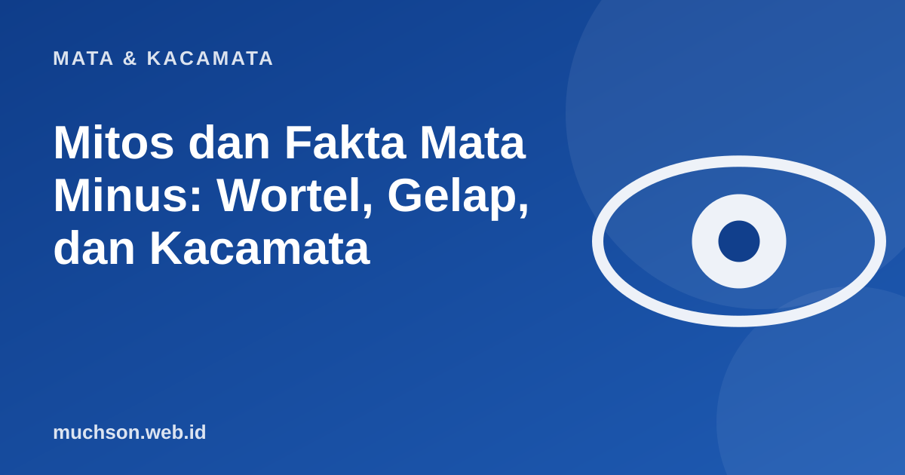

Beranda › Artikel › Mata & Kacamata
Mata & KacamataMitos dan Fakta Mata Minus: Wortel, Gelap, dan Kacamata
Seputar mata minus beredar banyak nasihat turun-temurun. Beberapa benar sebagian, banyak yang keliru. Ketuk kartu di bawah untuk menguji tebakan Anda sebelum membaca penjelasannya.

Yang benar-benar memengaruhi mata minus
Catatan
Informasi ini bersifat umum dan edukatif. Untuk keputusan tentang perawatan, termasuk LASIK dan terapi anak, konsultasikan dengan dokter spesialis mata.
Tanya jawab
Makanan apa yang baik untuk mata?
Pola makan seimbang dengan sayur berwarna, buah, ikan, dan telur mendukung kesehatan mata secara umum. Tidak ada makanan tunggal yang menyembuhkan minus.
Apakah mata minus bisa membaik sendiri?
Pada umumnya tidak. Minus cenderung stabil atau bertambah. Penurunan minus pada usia lanjut biasanya berkaitan dengan perubahan lensa atau kondisi mata lain, dan perlu diperiksa.
Apakah anak perlu dilarang membaca?
Tidak. Cukup beri jeda, cahaya yang baik, jarak wajar, dan waktu di luar ruangan setiap hari.